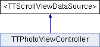

<TTScrollViewDataSource> Protocol Reference
Inheritance diagram for <TTScrollViewDataSource>:

Public Member Functions | |
| (NSInteger) | - numberOfPagesInScrollView: |
| (UIView *) | - scrollView:pageAtIndex: |
| Gets a view to display for the page at the given index. | |
| (CGSize) | - scrollView:sizeOfPageAtIndex: |
| Gets the natural size of the page. | |
Member Function Documentation
| - (UIView*) scrollView: | (TTScrollView *) | scrollView | ||
| pageAtIndex: | (NSInteger) | pageIndex | ||
Gets a view to display for the page at the given index.
You do not need to position or size the view as that is done for you later. You should call dequeueReusablePage first, and only create a new view if it returns nil.
| - (CGSize) scrollView: | (TTScrollView *) | scrollView | ||
| sizeOfPageAtIndex: | (NSInteger) | pageIndex | ||
Gets the natural size of the page.
The actual width and height are not as important as the ratio between width and height.
If the size is not specified, then the size of the page is used.
The documentation for this protocol was generated from the following file:
- Three20UI/Headers/TTScrollViewDataSource.h